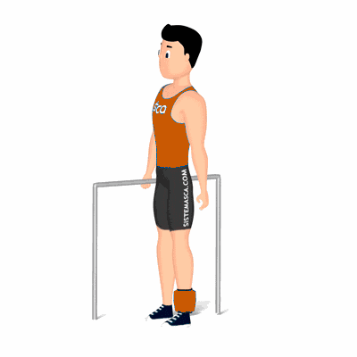

Flexão de Joelhos em Pé

Exercício para fortalecimento e hipertrofia dos músculos da coxa, com enfoque aos bíceps femorais. Indicado a praticante de musculação a nível iniciante e intermediário. Fácil execução.
Ficha Técnica
Tipo: Musculação
Grupo Muscular: Perna
Aparelho: Nenhum
Músculos: Nenhum
Como realizar
- Na posição em pé próximo a um espaldar, apoie as mãos sobre ele;
- Manter a coluna e cabeça alinhados durante toda execução;
- Coloque a caneleira na perna direita e eleve-a, com uma leve flexão dos joelhos;
- Realize a flexão do joelho, contraindo o músculo posterior de coxa;
- Manter a contração por um instante, estenda o joelho retornando à posição inicial lentamente;
- Repita os movimentos. Ao término das repetições, realize os mesmos movimentos com a perna esquerda.
 RC STORE
RC STORE